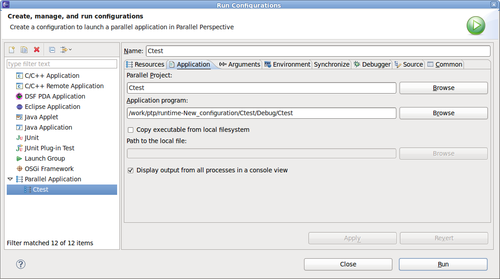
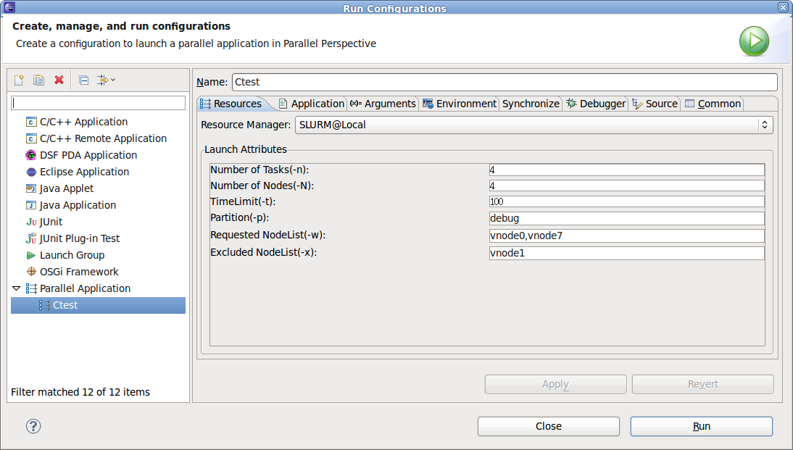
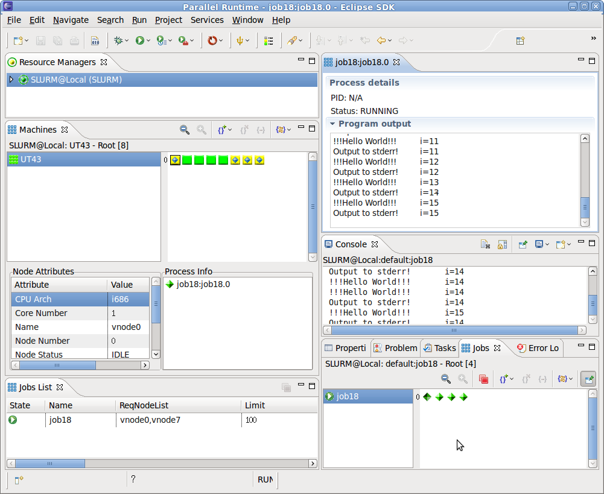

Once an application has been compiled, the first step in running the application is to be sure the resource manager for SLURM is running on a service node in the SLURM cluster where you intend to start the application. To do this, check the resource manager's entry in the resource manager view. The icon for the resource manager should be green. If it is not green, then right click over the resource manager's name and select Start resource manager from the popup menu to start the resource manager.
Before running an application, it must have a launch configuration defined for it. A launch configuration contains all of the settings required to run the application. The values entered in a launch configuration are saved so that the next time the application is run using the same launch configuration, those values do not need to be entered again.
To create a launch configuration, click the Run menu in the Eclipse menubar and select Run Configuration.... Alternatively, click the dropdown next to the run icon in the Eclipse toolbar and select Run Configuration.... When the run dialog is displayed, right click over Parallel Application and click New from the menu. This will create a new launch configuration. Set its name to the desired value. Select the Application tab and fill in the name of the project and the application program.
Make sure that the debugger tab has an appropriate debugger selected. Fill in the Arguments tab with any application program arguments. Fill in the Environment tab with any environment variable settings required by the application.
The Resources tab is the tab where invocation options unique to SLURM are entered.

Make sure the correct resource manager is selected in the dropdown list. The meaning of each field in the Launch Attributes is described as follows:
When Run is selected the job launch request is passed to the SLURM Resource manager proxy and then submitted to SLURM resource management system for execution. When the job starts it will appear in the PTP Jobs List view.
For more information on setting up the PTP Parallel Debugger launch, see Launching Parallel Programs for Debugging.